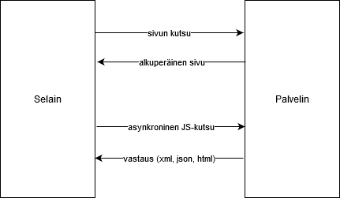

Tehdään pieni esimerkki jossa testataan miten JavaScript-funktion avulla kutsutaan PHP-tiedostoa. PHP-tiedosto palauttaa tekstin joka näytetään span-elementin sisällä. Tallenna tämä itsellesi demo16.php -tiedostoon.

<h1>Kertolasku</h1> <form action=""> Luku 1: <input type="text" id="luku1" name="luku1" onkeyup="laskeTulos()"><br /> Luku 2: <input type="text" id="luku2" name="luku2" onkeyup="laskeTulos()"><br /> </form> <h4>Tulos</h4> <p><span id="txtTulos"></span></p>
Funktiossa kutsutaan php-tiedostoa, tiedosto palauttaa lopputuloksen joka asetetaan txtTulos-spanille.
<script>
function laskeTulos() {
let luku1 = document.getElementById("luku1").value;
let luku2 = document.getElementById("luku2").value;
var xmlhttp = new XMLHttpRequest();
xmlhttp.onreadystatechange = function() {
if (this.readyState == 4 && this.status == 200) {
document.getElementById("txtTulos").innerHTML = this.responseText;
}
};
xmlhttp.open("GET", "demo16b.php?luku1=" + luku1 + "&luku2=" + luku2, true);
xmlhttp.send();
}
</script>
PHP:n tarkoitus on käsitellä syöte ja tehdä jokin asia palvelimen puolella. Tavallisesti PHP käsittelisi tiedostoa (json) tai tietokantaa (mysql).
<?php
$luku1 = $_REQUEST["luku1"];
$luku2 = $_REQUEST["luku2"];
if (filter_var($luku1, FILTER_VALIDATE_INT) && filter_var($luku2, FILTER_VALIDATE_INT)) {
echo "Kertolaskun lopputulos on " . ($luku1 * $luku2);
}
else {
echo "Väärä syöte!";
}
?>
Kokeile miten w3schools-sivun esimerkki hint-tekstin näyttämisestä tapahtuu.